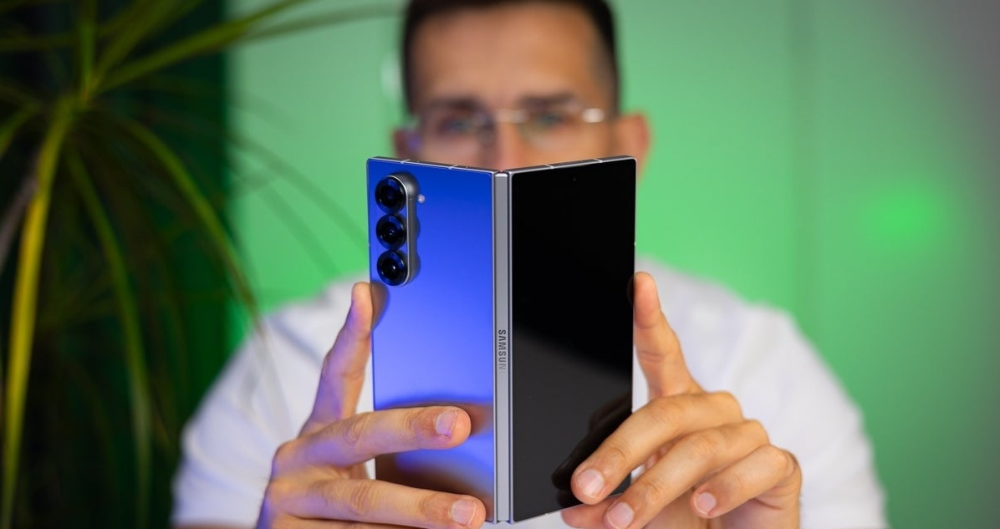

Samsung Galaxy Z Fold 6 Review: Faster, Stronger, Pricier
Galaxy Z Fold 6 Intro
With the release of the Samsung Galaxy Z Fold 6, we're witnessing yet another chapter of the foldable phone story unfold. This most recent edition of the product that pioneered this form-factor is once again a formidable competitor in the high-end foldable market, thanks to a number of significant advancements, especially in terms of design. In my review of the Galaxy Z Fold 6, I'll try to give you a complete rundown of what's new, what to expect from the Fold 6, and how it performs across the most important categories for a foldable nowadays.
The Galaxy Z Fold 6 now comes with a sharper, more rectangular design. This styling looks good on the Fold. There's a new matte coating on the metal body parts like the frame and the hinge that works well with this aesthetic. The hinge, which snaps solidly into place and feels more substantial and pleasant to use, is one of the most noticeable improvements. Meanwhile, the cover screen is still sufficiently small to keep the device nice and compact, but its slightly increased width makes it more functional. It seems like Samsung has worked on all the places that attracted the most criticism from fans.
But some things, like the camera setup, haven't changed. The Fold 6 performs well here, but doesn't innovate. The most you can expect from its trio of cameras is photo and video quality about on par with its predecessor. On the other hand, although the battery capacity remains unchanged, the new Snapdragon 8 Gen 3 for Galaxy chipset, along with other optimizations Samsung's done, seems to allow for better battery performance for a wider range of activities. Unfortunately, the charging speed cap of 25W keeps being an annoyance.
Starting July 24, the Galaxy Z Fold 6 will be available from $1900 for the 256 GB model, after an unfortunate price hike of $100 this year. This means the 512 GB model comes in at $2020, while the top-of-the-line 1 TB model reaches the imposing price tag of $2260. While we were hoping foldables will start getting cheaper soon, this price increase seems to suggest we aren't there yet.
The Galaxy Z Fold 6 receives high marks for its well-thought-out design and better battery life, but it receives lesser marks for its unaltered camera setup and slower charging times.
Z Fold 6 Design and Display

Design and display: this is the part that makes or breaks a foldable phone.
Ever since other players entered the foldable market, such as Huawei, Honor and Oppo/OnePlus, Samsung hasn’t really had the most technologically advanced folding design. In fact, the company has often been criticized for slow innovation on this front.
The Galaxy Z Fold 6 may not be launching Samsung into the stratosphere, but it sure represents a very meaningful upgrade, largely bringing it in line with the best offerings out there on the market.
Size is a big consideration for a foldable, so it’s great that the Fold 6 has lost fat in all the right places. It’s now thinner when folded, at 12.1mm, as well as unfolded at just 5.6mm. This is about on par with one of its major rivals, the OnePlus Open, but still not as thin as some other products found on the global market, such as the Honor Magic v2.
Regardless, the Galaxy Z Fold 6 feels satisfyingly slender, especially when you also factor in its reduced weight of 239g, down from the Fold 5’s 253g. This is a huge achievement, considering the iPhone 15 Pro Max weighs 221g. Now, the Fold 6’s weight is pretty much on par with that of its biggest rivals.
The Dual Rail hinge design has been improved: Samsung has managed to reduce the number of components needed, while making it stronger, lighter and more resistant to shock. The hinge mechanism of the Z Fold 5 was already quite good, but that of the Z Fold 6 feels even snappier and more stable. Opening and closing the Fold 6 feels really satisfying.
Display Measurements
In the Fold 6, Samsung has implemented a new protective layer on top of the main screen, which is thicker and more durable. We don’t know exactly how much more durable it is, but it’s generally supposed to have an enhanced resistance to pressure and sharp objects, including in the folding edge area.
Speaking of the folding edge, the moment you’ve been waiting for: yes, the crease has been reduced! The keyword here is “reduced,” because it’s still there, but it’s a bit less noticeable than that of the Fold 5. This means that the OnePlus Open continues to be the no-crease foldable champ for the time being, but the Galaxy Z Fold 6 is definitely relevant – the crease has been reduced to such an extent that it’s now more than tolerable.
Of course, both the cover and the main screens are of exceptional quality, supporting dynamic high-refresh rates of up to 120 Hz, super-high resolutions and all the other characteristics that make Samsung’s Dynamic AMOLED 2X displays such a joy to look at.
Our objective screen measurements prove Samsung's Dynamic AMOLED 2X screens have gotten even more exceptional. While most quality metrics remain pretty much the same as on the previous model, the improved maximum brightness of about 1500 nits is particularly impressive. This is brighter than most other flagships out there, foldable or not, and equal to the current brightness kings, the Pixel 8 and 8 Pro.
Biometrics: The Samsung Galaxy Z Fold 6 has a very fast and dependable side-mounted fingerprint scanner. Just like with the Fold 5, we don't have any complaints about its performance, except for the positioning, which can sometimes make interacting with the phone a bit inconvenient, say, if the phone is put on a stand or a car mount. But it's nothing you can't get used to.
Galaxy Z Fold 6 Camera
It's no secret that the Z Fold series are not the camera-centric phones in Samsung's portfolio. That's typically the S Ultra — so, in 2024, if you want the best phone camera Samsung has to offer, you’ll need to go with the Galaxy S24 Ultra.
But the Galaxy Z Fold phones still have cameras that can take some seriously awesome shots — they just don't have the most advanced camera sensors and the longest zoom ranges.
Samsung is retaining the familiar 3-camera setup as before, including the 50MP main camera, 10MP 3x telephoto, and 12MP ultrawide. The sensors and the rest of the hardware stack appears to be unchanged from what we saw in the Galaxy Z Fold 5.
Fittingly, the photo and video results we're getting from the Z Fold 6 are more or less on the same level as those of its predecessor. Most often, there isn't much of a noticeable difference between the Fold 6 and the Fold 5, which means we have a capable, but not industry-leading camera on our hands.
Our extremely comprehensive PhoneArena Camera Score test shows us there is, indeed, a very slight improvement in some areas, but this is by no means a significant difference. Samsung seems to have dialed back the sharpening a bit, most visible in the selfie and video shooting modes. Detail resolution from the 3x camera has also been enhanced somewhat. The algorithms generally work better, and you'll notice that even at 5x zoom levels, the Fold 6 comes up with a cleaner shot than its predecessor. Again, this is not a drastic improvement, but a visible one.
Overall, as expected, this is pretty much the same camera with a slightly improved software, leading to mostly negligible improvements over the previous generation. Last year's Z Fold 5 managed to score 140 points on our PA Camera Score, while the Z Fold 6 has edged it out slightly with a total score of 142. In comparison, Samsung's top camera phone, the Galaxy S24 Ultra, has a PA Camera Score of 154.
Galaxy Z Fold 6 Performance
Samsung has a tight partnership with Qualcomm. For the past couple of years, the flagship Snapdragon chips inside Samsung phones have come with the "For Galaxy" moniker. This generally means that the Snapdragons inside the latest Samsung Galaxy phones are running a tad faster than those in phones from other brands.
Galaxy Z Fold 6 doesn’t break this tradition, arriving on the scene with the Snapdragon 8 Gen 3 for Galaxy chipset. It's a pretty powerful SoC with hardware-accelerated ray tracing, Wi-Fi 7, and all the modern bobs and bolts. It gives the Apple A17 Pro a run for its money, even if it’s built on a 4 nm process instead of the newer 3 nm.
Samsung understands that gaming is a major use case for foldables, so it’s really tried to squeeze every last FPS out of the phone. As cooling is the major roadblock in phones, that’s where Samsung has done the most work, gracing the Z Fold 6 with a 1.6x larger vapor chamber for faster and broader heat transfer.
The new chipset and improved hardware come with a promise of up to 41% in NPU, 25% in GPU and 14% in CPU performance, compared to the Fold 5. In real-life, the Galaxy Z Fold 6 does move like a speed demon. Scrolling around the menus feels extremely fast and fluid.
Judging from our performance benchmark tests, the Fold 6 is extremely capable. It surpasses the previous generation's performance across the board. The most notable improvement is seen in multi-core CPU performance and overall graphics performance. Samsung is positioning the Z Fold 6 as an excellent gaming phone, and the Snapdragon 8 Gen 3 for Galaxy chipset, along with the advanced vapor chamber, definitely deliver.
If you're wondering about that NPU thing, it's the part of the chipset that is most heavily utilized for various AI features. This is why manufacturers double down on creating bigger and faster NPUs.
Galaxy Z Fold 6 Software & Ai
The Galaxy Z Fold 6 ships with Android 14, dressed up with Samsung's excellent One UI 6 — quite an advanced interface, chock-full with features for multi-tasking, Samsung-specific apps, SmartThings, multimedia controls, S Pen features, and a lot more. And, once Android 15 is out towards the tail end of 2024, we expect the Z Fold 6 to be among the first phones to get Google’s new software, complete with the new One UI 7 user interface. For those wondering about the software updates situation, Samsung's extreme 7-year support guarantee holds true for the Z Fold 6 as well.
There is a really big focus on adding AI to pretty much everything out there right now, I’m surprised we haven’t seen AI coffee makers yet.
The Galaxy Z Fold 6 is getting the same AI features we know from the Galaxy S24 line (but optimized for the bigger screen), plus some new ones.
Of course, we get the usual suspects and fan favorites like Circle to Search (easy search for everything on your screen), Browsing Assist (a web page translator and summarizer), Transcript Assist (easy meeting transcription, summary and translation) and Note Assist (auto-formatting, summarizing, sketch to image). The great news is Samsung has done some work to optimize these features for the Fold 6’s expansive canvas. For a complete rundown of all current Galaxy AI features, read our article “Galaxy AI: Everything you need to know about Samsung's new AI system.”
Galaxy Z Fold 6 Battery
Sadly, the rumors of a slightly bigger battery didn’t come true and the Galaxy Z Fold 6 will be arriving with the same 4,400 mAh unit as before.
On the bright side, the new Snapdragon 8 Gen 3 chipset, along with the better thermal management seems to be working wonders for the Z Fold 5, leading to a considerably increased battery life, compared to the Fold 5. After subjecting it to our PhoneArena Battery Test, we can estimate that battery life on the Fold 6 has increased by about 18%, as it gets a score of 5h 33mins, versus the Fold 5's 4h 41mins.
We're seeing a meaningful improvement across all three use cases that we test for: web browsing, video playback and 3D gaming. This result brings the Z Fold 6 in line its rival, the OnePlus Open, and slightly ahead of its other rival, the Google Pixel Fold (5h 22min). Just for comparison, Samsung's top regular flagship, the Galaxy S24 Ultra, offers better battery life – its PA Battery Score is 6h 46mins, but of course, that is to be expected considering the Fold 6 has to power that gigantic internal display.
Another uninspiring news has to do with the speed of charging, which remains at 25 watts. While not too bad, as you can get from 0% to 50% in about half an hour, it’s definitely less impressive than the OnePlus Open’s SuperVooc charging speeds of up to 67W. Wireless charging is there, but it's also not particularly fast, being capped at 15 watts.
Should you buy the Galaxy Z Fold 6?

Samsung’s Galaxy Z Fold 6 is absolutely a worthy successor to the Fold 5. That said, the competition in the foldable space has become fierce, so you can say there's some pressure riding on the Z Fold 6 release.
With a new, lighter, thinner and more durable design, as well as state-of-the-art performance and software support, the Galaxy Z Fold 6 is, without a doubt, a terrific option for users looking to grab a capable and well-supported foldable smartphone.